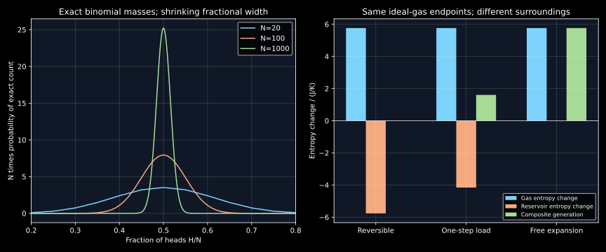

8. Entropy, engines and statistical concentration
An ideal gas can double its volume with no heat and no work, yet its entropy increases. The same gas can reach the same endpoints reversibly while absorbing heat and exporting the entropy change to its surroundings. Entropy is a state property; entropy transfer and generation describe the process. Keeping those roles distinct also resolves why equilibrium statistics can fluctuate while macroscopic thermodynamics predicts a reproducible direction.
The complete local transcripts of lessons 15–16 were read sequentially. They build entropy through heat engines and the Clausius inequality, then interpret it with Joule expansion, dice and coin multiplicities. This chapter supplies the second-law premise, the auxiliary-engine argument, explicit reservoir accounting and exact counting that qualify the introductory sketches. Original calculations and figures are mathematical constructions. No experimental engine, gas expansion or memory-erasure apparatus is reproduced.
8.1 A cyclic heat engine needs more than energy conservation L 15 · 01:28
An ideal heat reservoir keeps a fixed temperature while exchanging the finite heat considered here. Use positive absolute temperatures in K and heats and work in J. Let a cyclic device absorb heat $Q_h\gt 0$ from a reservoir at absolute temperature $T_h$ and reject heat of magnitude $Q_c\gt 0$ to a colder reservoir at $T_c$ . Work delivered is positive. Because the working substance returns to its initial state, its net internal-energy change vanishes. The first law gives $W=Q_h-Q_c$ and efficiency $\eta=W/Q_h=1-Q_c/Q_h$ .
The first law alone would allow $Q_c=0$ , giving unit efficiency. The restriction against converting heat drawn from a single reservoir completely into cyclic work is an additional second-law premise, the Kelvin–Planck statement. A noncyclic isothermal gas expansion can convert its absorbed heat into work while changing its volume; it does not contradict that premise because the working substance has not returned. The cycle condition is essential, but energy conservation plus cyclic operation is not by itself a proof that heat rejection must occur.
Compare an arbitrary engine with a reversible one between the same two reservoirs. Scale their operations to absorb the same $Q_h$ . If the arbitrary engine were more efficient, it would deliver more work and reject less heat. Run the reversible device backward, using some of that work, to return exactly $Q_h$ to the hot reservoir. The combined cyclic devices then leave only net heat extracted from the cold reservoir and an equal positive work output. That violates Kelvin–Planck. Therefore no engine between these reservoirs can exceed the reversible efficiency.
If two reversible engines had unequal efficiencies, the same construction could run the less efficient one backward and give the same contradiction. Their efficiencies must agree. This comparison requires the same two reservoir temperatures. Arbitrary reversible cycles that exchange heat at several temperatures do not all have one common efficiency. A regenerative cycle needs its regenerator included consistently before claiming that its only external heat contacts are those two reservoirs.
8.2 Derive the Carnot ratio, including the adiabatic hinge L 15 · 09:45
For an ideal-gas Carnot cycle, use four reversible stages: isothermal expansion $1\to2$ at $T_h$ , adiabatic expansion $2\to3$ down to $T_c$ , isothermal compression $3\to4$ at $T_c$ , and adiabatic compression $4\to1$ back to $T_h$ . The working substance has fixed positive amount $n$ in mol and, for the following algebra, constant positive molar heat capacity $C_{V,m}$ in J/(mol K). The molar gas constant is $R$ in J/(mol K); $C_{p,m}=C_{V,m}+R$ and $\gamma=C_{p,m}/C_{V,m}\gt1$. Endpoint volumes $V_1,\ldots,V_4$ are in m³.
The two isothermal heat amounts have magnitudes $Q_h=nRT_h\ln(V_2/V_1)$ and $Q_c=nRT_c\ln(V_3/V_4)$ . The adiabats obey $TV^{\gamma-1}=\mathrm{constant}$ . Applying this separately to the two adiabats gives
The equal volume ratios cancel from the heat ratio, yielding $Q_c/Q_h=T_c/T_h$ and
The universal reversible-engine comparison then extends the efficiency result beyond the ideal-gas working substance used to construct it. This is the logical role of that comparison; deriving one ideal-gas cycle alone would not establish universality for every material.
For one mole, $T_h=600$ K, $T_c=300$ K and isothermal expansion ratio two, the heat input is $3457.887793$ J, the cold heat rejection has magnitude $1728.943896$ J, and delivered work is $1728.943896$ J. Efficiency is $1/2$ . The two adiabatic internal-energy changes cancel over the cycle, while the isothermal changes vanish individually in the ideal caloric model.
Raising $T_h$ or lowering $T_c$ increases this upper bound under the stated reservoir conditions. Actual engines also face transport losses, material limits and power constraints. A higher hot temperature is not a standalone prediction of aircraft fuel economy or the performance of a particular alloy. Here it motivates why materials capable of operating at higher temperatures can expand a design space.
8.3 Establish the cycle inequality before defining entropy L 15 · 16:00
Let an arbitrary cyclic device exchange signed heats $Q_i$ with reservoirs at $T_i\gt 0$ , with positive heat into the device. Introduce a reference reservoir at $T_0\gt0$ K. For each $i$ , attach a reversible auxiliary device that exchanges $-Q_i$ at $T_i$ , canceling that reservoir's heat exchange with the original device. Its reversible heat ratio requires a heat $Q_{0,i}=T_0Q_i/T_i$ into the auxiliary device from the reference reservoir.
The composite is cyclic and exchanges net heat only with $T_0$ . Its net work equals $Q_0=\sum_iQ_{0,i}$ . Kelvin–Planck forbids $Q_0\gt 0$ , since that would convert heat from one reservoir completely into work. For the continuous form, let $T_b$ be the positive absolute temperature at the relevant heat-exchange boundary or reservoir contact. Thus
The integral is the limit of divided exchanges, and $T_b$ identifies the temperature at the relevant heat-exchange boundary or reservoir contact in the chosen system accounting. A nonequilibrium interior does not generally have one temperature that can be inserted in every denominator. Interfaces with finite temperature jumps must be assigned consistently to the system or its surroundings.
For a reversible cycle the reverse operation is possible. Applying the same inequality in both directions forces equality. This yields a path-independent quantity: take two reversible paths from state A to state B, traverse one forward and the other backward, and apply equality to their combined cycle. Their integrals $\int_A^B\delta Q_{\rm rev}/T$ are equal. Let $S$ be entropy in J/K. Define their common endpoint difference as
This construction requires equilibrium endpoints and appropriate reversible connecting paths; it determines entropy differences up to a reference constant. It does not define a state function of an arbitrary nonequilibrium transient by subtracting two unknown “heat contents.” The same reversible-path argument appears in MIT 3.020 lecture 5, which states the cycle inequality as its premise.
Now follow an actual path A to B and return reversibly. Equation (8.3) gives $\int_A^B\delta Q/T_b-\Delta S\leq0$ . Let $S_{\rm gen}$ denote generated entropy in J/K. For a closed system the entropy balance can therefore be written
The actual transfer term and the generated part depend on the process and system boundary; $\Delta S$ depends on the specified endpoints. Entropy units are J/K. Generation is not energy generation: multiplication by a reference temperature can relate it to a work-potential loss under additional exergy conditions, but there is no universal rule that every arbitrary work difference equals the local system temperature times its generated entropy.
8.4 Use the actual reservoir heat in the surroundings ledger L 15 · 28:42
An ideal reservoir stays at fixed temperature while exchanging energy. If the system receives actual heat $Q$ from a reservoir at $T_0$ , that reservoir's entropy change is $-Q/T_0$ . Its large size supports the fixed-temperature model; it does not make a finite-temperature-difference transfer reversible. One must not substitute the heat of an imagined reversible path for the reservoir's actual energy loss.
Consider the common ideal-gas endpoints of chapter 7: one mole at 300 K doubles its volume. Its entropy change from (7.8) is $R\ln2=5.763146322$ J/K. In the reversible isotherm the heat received is $300R\ln2$ , so the reservoir changes by $-R\ln2$ and the combined entropy change vanishes. In the one-step load expansion, the actual heat received after equilibration is $300R/2$ , so the reservoir changes by $-R/2=-4.157231309$ J/K. The system-plus-reservoir entropy increase is $1.605915013$ J/K.
For a fully insulated ideal-gas free expansion between the same gas endpoints, $Q=W=0$ , $\Delta U=0$ and the final temperature remains 300 K in the specified caloric model. No heat entropy enters from a reservoir, so the gas's entire $R\ln2$ increase is generated. To calculate it, use the fictitious reversible isothermal path only as a state-function integration device. That path's heat was not transferred during the actual free expansion.
For an isolated composite containing system, relevant surroundings and work stores, entropy is nondecreasing in the macroscopic second-law description. A subsystem can lose entropy while exporting more to its surroundings. The word “universe” in the lecture's balance denotes this thermodynamically closed accounting, not a derivation of cosmological dynamics. A nonnegative entropy balance also does not supply a kinetic law or guarantee rapid passage over barriers.
8.5 Entropy maximization is constrained, not an unlimited climb L 16 · 02:44
For an isolated system with fixed energy, volume, component amounts and other retained constraints, stable equilibrium maximizes entropy over accessible macrostates. Removing a partition changes the admissible set. The gas fills the allowed chamber; it cannot maximize entropy by occupying an infinite volume that the chamber does not provide. A metastable state can be locally persistent while failing to attain the global maximum over a broader set of configurations.
Two bodies exchanging energy give an explicit extremum calculation. Let body $i\in\{1,2\}$ have internal energy $U_i$ in J, temperature $T_i\gt0$ in K, entropy $S_i$ in J/K and fixed positive heat capacity $C_i=dU_i/dT_i$ in J/K under the held conditions. Neglect volume work and phase changes, and write $S_{\rm tot}=S_1+S_2$. Isolate their composite and allow only heat exchange between them. Conservation fixes $U_1+U_2$ . The entropy derivative with respect to an energy transfer into body 1 is $dS_{\rm tot}/dU_1=1/T_1-1/T_2$ . At an interior maximum the temperatures are equal. A further derivative gives $d^2S_{\rm tot}/dU_1^2=-1/(C_1T_1^2)-1/(C_2T_2^2)\lt 0$ , proving a strict maximum under these assumptions.
With $C_1=C_2=1000$ J/K and initial temperatures 600 K and 300 K, energy conservation gives final 450 K. The hot body's entropy change is $1000\ln(450/600)=-287.682072452$ J/K; the cold body's is $1000\ln(450/300)=405.465108108$ J/K. Their total increases by 117.783035656 J/K although no energy enters the composite. Energy conservation sets the final temperature; entropy selects the permitted direction. This simple heat-capacity model is stipulated, without claiming these are measured properties of a particular material.
Positive entropy production does not identify an exact time to equilibrium, a unique microscopic trajectory, or the absence of a nucleation barrier. Likewise, a driven open system can maintain a steady state by exporting entropy. The maximization statement applies to the isolated constrained problem, not to every subsystem held between external gradients.
8.6 A macrostate groups many microstates L 16 · 12:45
For two distinguishable fair dice, an ordered pair of face values is a microstate. The sum is a macrostate: sum 7 groups six microstates, while sum 2 groups only(1,1). If all 36 ordered pairs are equally probable, the probabilities of those sums are 6/36 and 1/36. A multiplicity is a count, while a probability requires a weighting rule. Equal probability of all macrostates does not follow from equal probability of their constituent microstates.
For a positive integer $N$ of distinguishable independent fair coins, a microstate specifies the result of every coin, while the macrostate $H=h$ specifies only the number of heads. Its multiplicity and probability are
Choosing the $h$ head positions proves the count; summing all counts gives $2^N$ by the binomial theorem, proving normalization. Four coins have multiplicities 1,4,6,4,1 for 0 through 4 heads. Write $\Omega_{N,\max}=\max_{0\leq h\leq N}\Omega_N(h)$ for the maximum multiplicity. The lecture's normalized-height display $\Omega_N(h)/\Omega_{N,\max}$ is useful for comparing shapes, but its entries do not sum to one. It is not the probability distribution until divided by the total count.
For biased independent coins with head probability $p\in[0,1]$, the same multiplicities remain, but the macrostate probability is $\binom Nh p^h(1-p)^{N-h}$ . Counting alone no longer ranks likelihoods in the fair-coin way. In physical statistical mechanics, accessible states and their ensemble weights must likewise be specified before using multiplicity to predict equilibrium.
8.7 Equilibrium concentration does not freeze one exact count L 16 · 20:50
Successive multiplicities satisfy $\Omega_N(h+1)/\Omega_N(h)=(N-h)/(h+1)$ . They increase toward the center and decrease afterward. For even $N$ , the unique most probable exact head count is $N/2$ . For odd $N$ , the two neighboring central counts tie. This locates the mode, but does not say that the system remains in it at every observation.
For 1000 fair coins, exact integer counts give $\log_{10}\binom{1000}{100}=139.805164384$ , $\log_{10}\binom{1000}{300}=263.734659845$ and $\log_{10}\binom{1000}{500}=299.431827152$ . The corresponding probability of exactly 500 heads is only 0.025225018. In contrast, the probability of a count between 450 and 550 inclusive is 0.998608258. The highly probable equilibrium region contains many nearby macrostates.
Write $H=\sum_{j=1}^NX_j$ , with independent Bernoulli variables $X_j$, equal to 1 for heads and 0 for tails. Each has mean 1/2 and variance 1/4, so $\mathbb E[H]=N/2$ and $\operatorname{Var}(H)=N/4$ . The standard deviation of the fraction of heads is
The absolute fluctuation width grows like $\sqrt N$ , while its fractional width shrinks like $N^{-1/2}$ . This is why a macroscopic fraction becomes reproducible even though the system explores many exact head counts. Stirling's formula is $N!\sim\sqrt{2\pi N}(N/e)^N$ as $N\to\infty$. For even $N$, inserting it into $2^{-N}N!/[(N/2)!]^2$ gives the central single-count probability $\sim\sqrt{2/(\pi N)}$. There is no contradiction between a decreasing point probability and increasing concentration in a narrow relative band.
All-heads probability is $2^{-N}$ , positive for every finite $N$ . At 1000 coins its base-ten logarithm is−301.029995664. This event is extraordinarily unlikely in fair independent resampling, but not mathematically impossible. Counting does not supply a recurrence time until a dynamics and observation protocol are defined. The shaking-box illustration is a randomization analogy, not a closed mechanical proof that an isolated microscopic entropy increases at every instant.
Figure 8.1 compares the narrowing fractional coin distribution with the distinct entropy-transfer and entropy-generation ledgers for common gas endpoints.

8.8 Why a logarithm connects independent counts to additive entropy L 16 · 28:24
For independent systems with multiplicities $\Omega_A$ and $\Omega_B$ , specifying both microstates gives $\Omega_{AB}=\Omega_A\Omega_B$ . Thermodynamic entropy is additive for independent subsystems under the appropriate bulk approximation. To see the mathematical hinge, assume a continuous extension of the entropy mapping to positive arguments, with $f(ab)=f(a)+f(b)$. Set $\varphi(t)=f(e^t)$. Then $\varphi(t+u)=\varphi(t)+\varphi(u)$; continuity makes $\varphi$ linear, so $f$ is logarithmic. The physical scale is the Boltzmann constant $k_B=1.380649\times10^{-23}$ J/K. Thus a continuous monotone mapping from multiplicative counts to an additive quantity is logarithmic: $S=k_B\ln\Omega$ plus a consistent reference. The constant fixes the physical entropy scale. This argument motivates the functional form; it does not replace the ensemble assumptions that connect a count to a thermodynamic state.
In the microcanonical setting, accessible microscopic states within the stated energy and other constraints have equal ensemble weights, and a specified macrostate has a multiplicity $\Omega$ . Its Boltzmann entropy is $S_{\rm Boltz}=k_B\ln\Omega$, using a distinct label from endpoint B in (8.4). A classical phase-space count requires a consistent measure and resolution, not a logarithm of a dimensionful volume without normalization. Quantum state counting supplies another way to make the count dimensionless. Reference factors matter for absolute entropy; many cancel in a difference.
For a dilute classical ideal gas expanding at fixed total energy and particle number, the position-space factor is proportional to $V^N$ . The unchanged momentum and indistinguishability factors cancel in the volume ratio. Hence $\Omega_2/\Omega_1=(V_2/V_1)^N$ and
This recovers the classical ideal-gas entropy difference used for Joule expansion. It relies on the stated dilute classical model and accessible ensemble, not on a claim that no microscopic reverse trajectory exists. Coarse macrostates, ensemble entropy and the fine-grained density of an exactly isolated Hamiltonian system have different evolution laws. A multiplicity argument alone does not prove monotonicity of every one of these quantities under every dynamics.
Another exact counting example clarifies the size dependence. Let two groups of four distinguishable, equal-frequency harmonic modes share twelve identical energy quanta, each of energy $\epsilon\gt0$ in J. Measure energy above the unchanged zero-point offsets, and give all accessible occupation vectors equal microcanonical weight. For integer $q\in\{0,\ldots,12\}$, a group's count at $q$ quanta is $\binom{q+3}{3}$ by dividing $q$ identical quanta among four ordered modes. Equivalently, placing three separators among $q+3$ positions gives the four nonnegative occupation counts. The probability of the first group's energy is proportional to $\binom{q+3}{3}\binom{15-q}{3}$ . The unique modal split is 6/6, but its probability is only 0.140033341. The normalization is $\sum_{q=0}^{12}\binom{q+3}{3}\binom{15-q}{3}=\binom{19}{7}=50388$ , counting the twelve quanta among all eight modes directly. Maximum multiplicity predicts the most probable split without forbidding nearby fluctuations in this small system.
8.9 A physical information example needs an entropy ledger too
For a physical memory encoding one logical bit by a particle occupying one of two potential wells, with equally weighted logical states and unchanged conditional intrawell entropy, the logical contribution is $k_B\ln2$ . A perfect reset to one chosen state reduces it by that amount. If reset is isothermal at $T_0$ and no other entropy store compensates, the reservoir must gain at least $k_B\ln2$ , requiring heat into the reservoir $Q_{\rm bath}\geq k_BT_0\ln2$ . At 300 K this is approximately $2.870979\times10^{-21}$ J per initially unbiased erased bit.
Bérut and collaborators' 2012 primary experiment used a colloidal particle in a controlled double-well memory and examined mean heat and erasure success. The inspected full paper copy, including Methods, distinguishes individual fluctuating heat outcomes from ensemble behavior and discusses incomplete erasure. Their apparatus is not reproduced here.
The minimum bath entropy increase is not a minimum total entropy production of $k_B\ln2$ . In a limiting reversible reset, memory entropy decreases by $k_B\ln2$ and bath entropy increases by the same amount, so their total can approach zero. Real finite-time losses add generation. This distinction mirrors the transfer/generation ledger above and prevents an information slogan from replacing physical accounting. The bound is not an automatic energy-per-FLOP or energy-per-language-model-token prediction: identifying which physical information is erased, its prior distribution and other entropy stores is part of the problem.
8.10 Problems with complete solutions
An energy-balanced forbidden engine. A cyclic device absorbs 1000 J from one 300 K reservoir and delivers 1000 J of work with no other change. Which law does it satisfy and which does it violate? Compare with a noncyclic ideal-gas isothermal expansion.
Solution
The device has zero $\Delta U$ and $Q=W=1000$ J, satisfying energy conservation. It violates Kelvin–Planck because its sole net effect is to convert heat from one reservoir completely into cyclic work. A noncyclic isothermal gas expansion also has $Q=W$ in the ideal model, but its volume and pressure change. Restoring that gas adds further exchanges. The omitted restoration is what distinguishes the two experiments.
Clausius engine audit. A two-reservoir engine absorbs 1200 J at 600 K and rejects 500 J at 300 K. Find work, efficiency and the signed heat-over-temperature sum. Is the proposal consistent with the second law?
Solution
The first law gives $W=1200-500=700$ J and $\eta=7/12\approx0.583333$ . But $Q_h/T_h-Q_c/T_c=1200/600-500/300=1/3$ J/K is positive, violating the cyclic inequality. The Carnot limit is $1-300/600=1/2$ . Energy balance alone had not ruled out this overefficient proposal.
Transfer versus generation. Reproduce the gas-plus-reservoir entropy balance for the 300 Kone-step doubling. Why is it wrong to insert the reversible heat into the actual reservoir change?
Solution
The gas endpoint change is $R\ln2=5.763146322$ J/K. Actual heat is $300R/2$ , so the reservoir change is $-R/2=-4.157231309$ J/K. The total is $1.605915013$ J/K. Inserting $Q_{\rm rev}=300R\ln2$ would describe a different reservoir energy loss and incorrectly erase this positive generation. A fictitious reversible path computes the gas state-function difference; it does not change what happened outside the actual gas.
Finite bodies. Two isolated-as-a-composite bodies have constant capacities 2000 and 1000 J/K and initial temperatures 600 and 300 K. Find final temperature and total entropy change, with negligible work and no phase changes.
Solution
Conservation gives $T_f=(2000\times600+1000\times300)/3000=500$ K. Total entropy change is $2000\ln(500/600)+1000\ln(500/300)\approx146.182510$ J/K, positive. The hot contribution is negative and the cold one positive; only their total is constrained to be nonnegative for this isolated experiment. The strict-concavity calculation in§8.5 establishes the equal-temperature maximum rather than assuming entropy increases indefinitely.
Multiplicity is not probability. Four fair coins have central multiplicity 6. Compute the probability of exactly two heads and the sum of all multiplicity-to-maximum ratios. Is the latter a normalized probability distribution?
Solution
The central probability is $6/16=3/8$ . The five ratios are $(1,4,6,4,1)/6$ , which sum to $16/6=8/3$ , not one. Dividing by the maximum count rescales the ordinate; dividing by total count normalizes it. The two operations answer different questions.
Concentration with fluctuations. For 1000 fair coins, compute the standard deviation of the head count and of the head fraction. Explain why a single most probable count can have probability only 0.025225018 while the relative outcome is sharply concentrated.
Solution
The count standard deviation is $\sqrt{1000}/2\approx15.811388$ , and the fractional deviation is $1/(2\sqrt{1000})\approx0.015811388$ . Many nearby counts fit inside a narrow fraction band. Each count receives only part of its probability, and the central exact count is one of them. The exact 450–550 band probability is 0.998608258. Increasing $N$ makes the fractional width smaller even though the number of counts within that width grows like $\sqrt N$ .
Additive entropy from multiplicative states. Two independent subsystems have multiplicities $10^{30}$ and $10^{40}$ . Compute their combined Boltzmann entropy in units of $k_B$ . Why would $S\propto\Omega$ fail the required additivity?
Solution
The combined multiplicity is $10^{70}$ , and $S_{AB}/k_B=70\ln10=30\ln10+40\ln10$ , equal to the sum of individual entropies. A quantity proportional to $\Omega$ would be proportional to $10^{70}$ for the combined system rather than to $10^{30}+10^{40}$ . Its multiplication rule would not reproduce entropy additivity. Independence and a consistent count are part of the setup.
A small energy-sharing system. For the two four-mode groups with twelve quanta, count the states at split 0/12 and 6/6. Compare their probabilities and state what this says about a maximum-multiplicity prediction.
Solution
At 0/12 the product is $\binom33\binom{15}3=455$ . At 6/6 it is $\binom93^2=84^2=7056$ . Divide by 50388 to obtain probabilities approximately 0.009029928 and 0.140033341. The central split is more probable but far from certain. The equilibrium distribution includes energy fluctuations. Counting the mode alone cannot imply permanent residence at that exact energy split or predict how quickly exchanges occur.
Erasure and total generation. Under the stipulated symmetric physical-bit model, an initially unbiased bit is reset perfectly and releases exactly $k_BT_0\ln2$ to a reservoir. Compute memory, reservoir and total entropy changes. What if the initial logical state was already known and unchanged?
Solution
The unbiased bit loses $k_B\ln2$ , the reservoir gains $k_B\ln2$ , and the total is zero in the ideal limit. The nonzero bath heat is compatible with zero limiting total generation because entropy is transferred while the memory's state distribution changes. If the initial state is known and unchanged, its logical entropy change is zero and this particular erasure cost does not follow. Real control hardware and dissipative losses still require their own accounting. A generic count of software operations does not identify these physical state changes.
8.11 Reproduce the entropy and counting ledgers
Run python code/ch08_entropy_and_counts.py from this project. The standard-library program uses exact integer combinations before converting normalized probabilities or logarithms. It checks the Carnot ledger, finite-body entropy signs, actual reservoir heat, fair-coin normalization and an exact multiplicity convolution. Inputs are the fixed reservoir temperatures, capacities and nonnegative integer counts in the listing. It reads no files, makes no network requests and writes only standard output; assertions reject failed entropy signs, normalization or counting identities. The coin helper requires integer $N\geq0$ and $0\leq h\leq N$. It does not simulate the dynamics of coin shaking or claim a recurrence time. The figure generator tools/plot_entropy.py additionally requires Matplotlib.
"""Original Carnot ledger, entropy balances and exact fair-coin counts."""
from math import comb, log, log10, sqrt, isclose
R = 8.31446261815324
def coin_probability(n, heads):
return comb(n, heads) / 2**n
def main():
hot, cold, ratio = 600.0, 300.0, 2.0
qhot = R * hot * log(ratio)
qcold = -R * cold * log(ratio)
work = qhot + qcold
assert isclose(qhot / hot + qcold / cold, 0, abs_tol=1e-12)
assert isclose(work / qhot, 1 - cold / hot)
# Two finite equal heat-capacity bodies, insulated as a composite.
capacity = 1000.0
final = (hot + cold) / 2
change_hot = capacity * log(final / hot)
change_cold = capacity * log(final / cold)
assert change_hot < 0 < change_cold and change_hot + change_cold > 0
# Fixed-temperature one-step expansion: actual heat differs from reversible
# heat.
temperature = 300.0
delta_s = R * log(2)
q_actual = R * temperature / 2
generated = delta_s - q_actual / temperature
assert generated > 0
n = 1000
middle = coin_probability(n, 500)
band = sum(comb(n, k) for k in range(450, 551)) / 2**n
assert isclose(sum(coin_probability(4, k) for k in range(5)), 1)
assert middle < 0.026 and band > 0.998
# Two four-oscillator groups share twelve integer energy quanta.
def ways(q):
return comb(q + 3, 3)
weights = [ways(q) * ways(12 - q) for q in range(13)]
assert weights == weights[::-1] and weights.index(max(weights)) == 6
assert sum(weights) == comb(12 + 8 - 1, 8 - 1)
print(
(
"Carnot 600/300 K, isothermal ratio2: Qhot %.6f J; Qcold %.6f J; "
"work %.6f J; efficiency %.6f."
)
% (qhot, qcold, work, work / qhot)
)
print(
(
"Equal finite bodies: final %.1f K; DeltaS_hot %.9f; DeltaS_cold "
"%.9f; total %.9f J/K."
)
% (final, change_hot, change_cold, change_hot + change_cold)
)
print(
(
"One-step 300 K expansion: DeltaS_gas %.9f; reservoir %.9f; gener"
"ated %.9f J/K."
)
% (delta_s, -q_actual / temperature, generated)
)
print(
"Ideal isolated doubling: Q=0, W=0; DeltaS=R ln2 = %.9f J/K." % delta_s
)
print(
"1000 fair coins, log10 multiplicities at 100 / 300 / 500 heads: "
+ ", ".join("%.9f" % log10(comb(n, k)) for k in [100, 300, 500])
)
print(
(
"1000 coins: exact middle probability %.9f; 450..550 band %.9f; f"
"ractional standard deviation %.9f."
)
% (middle, band, 1 / (2 * sqrt(n)))
)
print(
(
"All-head probability log10 = %.9f; this event has positive proba"
"bility."
)
% (-n * log10(2))
)
print(
(
"Two four-oscillator groups: modal split6/6; probability %.9f; to"
"tal microstates %d."
)
% (weights[6] / sum(weights), sum(weights))
)
print(
(
"Checks: cyclic entropy, finite-body signs, actual reservoir heat"
", exact normalization and multiplicity convolution PASS."
)
)
if __name__ == "__main__":
main()
Carnot 600/300 K, isothermal ratio2: Qhot 3457.887793 J; Qcold -1728.943896 J; work 1728.943896 J; efficiency 0.500000. Equal finite bodies: final 450.0 K; DeltaS_hot -287.682072452; DeltaS_cold 405.465108108; total 117.783035656 J/K. One-step 300 K expansion: DeltaS_gas 5.763146322; reservoir -4.157231309; generated 1.605915013 J/K. Ideal isolated doubling: Q=0, W=0; DeltaS=R ln2 = 5.763146322 J/K. 1000 fair coins, log10 multiplicities at 100 / 300 / 500 heads: 139.805164384, 263.734659845, 299.431827152 1000 coins: exact middle probability 0.025225018; 450..550 band 0.998608258; fractional standard deviation 0.015811388. All-head probability log10 = -301.029995664; this event has positive probability. Two four-oscillator groups: modal split6/6; probability 0.140033341; total microstates 50388. Checks: cyclic entropy, finite-body signs, actual reservoir heat, exact normalization and multiplicity convolution PASS.
Sources and provenance
- Prof. K. Guruvidyathri, University of Hyderabad: NPTEL lessons 15 and 16. Complete local machine transcripts read; no comprehensive audiovisual audit claimed.
- Rafael Jaramillo, MIT 3.020 lecture 5 (2021): inspected notes on the cycle inequality, reversible-path entropy and constrained isolated-system maximum.
- Bérut et al., Nature 483,187–189 (2012), DOI10.1038/nature10872: physical two-well erasure experiment. The actual primary-paper copy including Methods was fully read; the publisher PDF endpoint returned HTML in local retrieval and is not counted as full article access. No experiment, heat-distribution dataset or apparatus reconstruction is claimed.